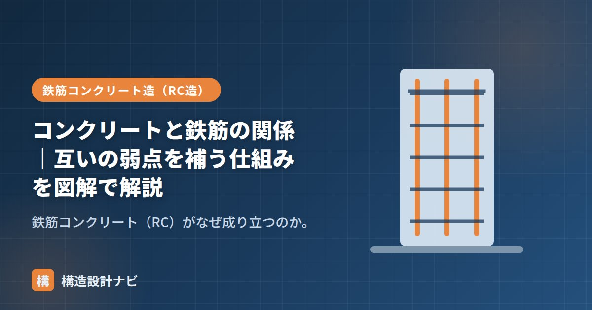

コンクリートと鉄筋の関係｜互いの弱点を補う仕組みを図解で解説

鉄筋コンクリート（RC＝Reinforced Concrete）とは、コンクリートと鉄筋という性質の異なる2つの材料を組み合わせた複合材料のことです。なぜこの2つを組み合わせるとうまくいくのか——それは互いの弱点をちょうど補い合う、奇跡のような相性の良さがあるからです。単に「硬いコンクリートに鉄筋を足して強くする」という単純な話ではなく、力学的な役割分担と、化学的・物理的な相性の良さが重なって初めて成り立つ組み合わせだといえます。
- RCは圧縮に強いコンクリートと引張に強い鉄筋が力を分担する複合材料。
- 熱膨張率がほぼ同じ・アルカリ性が錆を防ぐ・付着で一体化するという相性の良さがある。
- 一体性を保つ「付着」と「かぶり厚さ」の管理がRC造の生命線になる。
それぞれの得意・不得意
| 材料 | 得意 | 不得意 |
|---|---|---|
| コンクリート | 圧縮に強い・安い・耐火・耐久 | 引張に弱い（圧縮の約1/10） |
| 鉄筋 | 引張に強い・粘り強い | 錆びる・熱に弱い・細いと座屈 |
仕組み：引張は鉄筋、圧縮はコンクリート
梁が曲がると、断面の中で引張と圧縮が同時に生じます（曲げ応力度）。下に凸に曲がる梁では、下側が引張・上側が圧縮になります。そこで引張が生じる側に鉄筋を配置すれば、コンクリートが苦手な引張を鉄筋が肩代わりし、圧縮はコンクリートが受け持ちます。
図：下に凸の梁では下側が引張。そこに鉄筋を入れてコンクリートの弱点を補う
4つの「相性の良さ」
RCが成立するのは、力の分担だけでなく、次の物理的な相性のおかげです。
| 相性 | 内容 |
|---|---|
| ① 力の補完 | 圧縮＝コンクリート、引張＝鉄筋で役割分担できる。 |
| ② 熱膨張率がほぼ同じ | 温度変化で同じだけ伸縮するため、内部で剥がれたりズレたりしない。 |
| ③ アルカリ性が錆を防ぐ | コンクリートのアルカリ性が、覆われた鉄筋の錆を防ぐ。 |
| ④ 付着で一体化 | 鉄筋表面の凹凸（異形鉄筋）とコンクリートが密着し、一体で働く。 |
- 鉄筋はさらにコンクリートに守られることで、自身の弱点（錆・熱・座屈）も克服している。互いに守り合う関係。
- この一体性を保つのが付着とかぶり厚さ。だからRC造ではかぶり厚さが極めて重要。
RC誕生の歴史
鉄筋コンクリートの発想は、19世紀のヨーロッパで生まれたといわれています。園芸用の植木鉢や水槽をつくる際、コンクリートだけでは割れやすいため、内部に金網や鉄線を入れて補強したのが始まりとされ、その後、橋やスラブなど建築・土木構造物へと応用が広がりました。当初は経験的な試行錯誤で配筋が決められていましたが、20世紀に入ると力学的な計算に基づく設計法が整備され、現在のRC造の設計体系へとつながっています。日本でも早くから研究・実用化が進み、RC造は集合住宅やビルの主要な構造形式として定着しました。
計算例：梁の断面に生じる力
RCの役割分担を具体的にイメージするために、簡単な数値例で考えてみます。両端が支えられた梁の中央に荷重が加わると、梁の下側には引張力、上側には圧縮力が生じます。このとき、断面に生じる応力度は、おおむね次のように整理できます。
たとえば、ある断面で曲げモーメントが生じているとき、下側の鉄筋がすべての引張力を負担し、上側のコンクリートがすべての圧縮力を負担すると考えると、鉄筋の引張力とコンクリートの圧縮力は大きさが等しく、向きが逆の偶力としてつり合います。この「引張は鉄筋、圧縮はコンクリート」という単純化した考え方が、RC梁の断面設計（許容応力度設計・終局強度設計とも）の出発点になっています。
かぶり厚さが不足すると、コンクリートのアルカリ性が中性化した際に鉄筋まで達しやすくなり、錆による膨張でコンクリートにひび割れ・剥落を招きます。設計時のかぶり厚さ確保はもちろん、施工時にスペーサーで鉄筋位置を正しく保持することも欠かせません。
よくある質問
Q1. 鉄筋がなくてもコンクリートだけで建物はつくれますか？
引張力がほとんど生じない部位であれば、鉄筋を入れない無筋コンクリートも使われます。捨てコンクリートや土間、小規模な基礎などが代表例です。ただし、地震時の水平力や曲げが生じる柱・梁・耐震壁には、引張に強い鉄筋が不可欠です。
Q2. 鉄筋は太いほど丈夫なのではないですか？
鉄筋を太くすれば引張に対する強さは増しますが、かぶり厚さや鉄筋どうしの間隔（あき）が確保できないと、コンクリートが密実に充填されず、かえって付着や耐久性が損なわれます。断面や配筋は、強度・かぶり厚さ・施工性のバランスで決められています。
配筋検査でスペーサーの数が足りているかは、必ず自分の目で数えて確認します。理屈の上でかぶり厚さが確保されていても、打設時にスペーサーが少なければ鉄筋が動いてしまい、コンクリートと鉄筋の相性の良さが台無しになってしまうからです。
コンクリート側の弱点と対策は「コンクリートの弱点」、曲げと断面の関係は「断面係数とは？」、RC造全体は「鉄筋コンクリート造（RC造）とは？」をどうぞ。
まとめ
- 圧縮に強いコンクリートと引張に強い鉄筋が、互いの弱点を補い合う。
- 熱膨張率が同じ・アルカリが錆を防ぐ・付着で一体化、の相性の良さで成立する。
- 19世紀の植木鉢の補強に始まり、力学的な設計法へと発展してきた歴史がある。
- 一体性を保つ「付着」と「かぶり厚さ」がRC造の生命線。